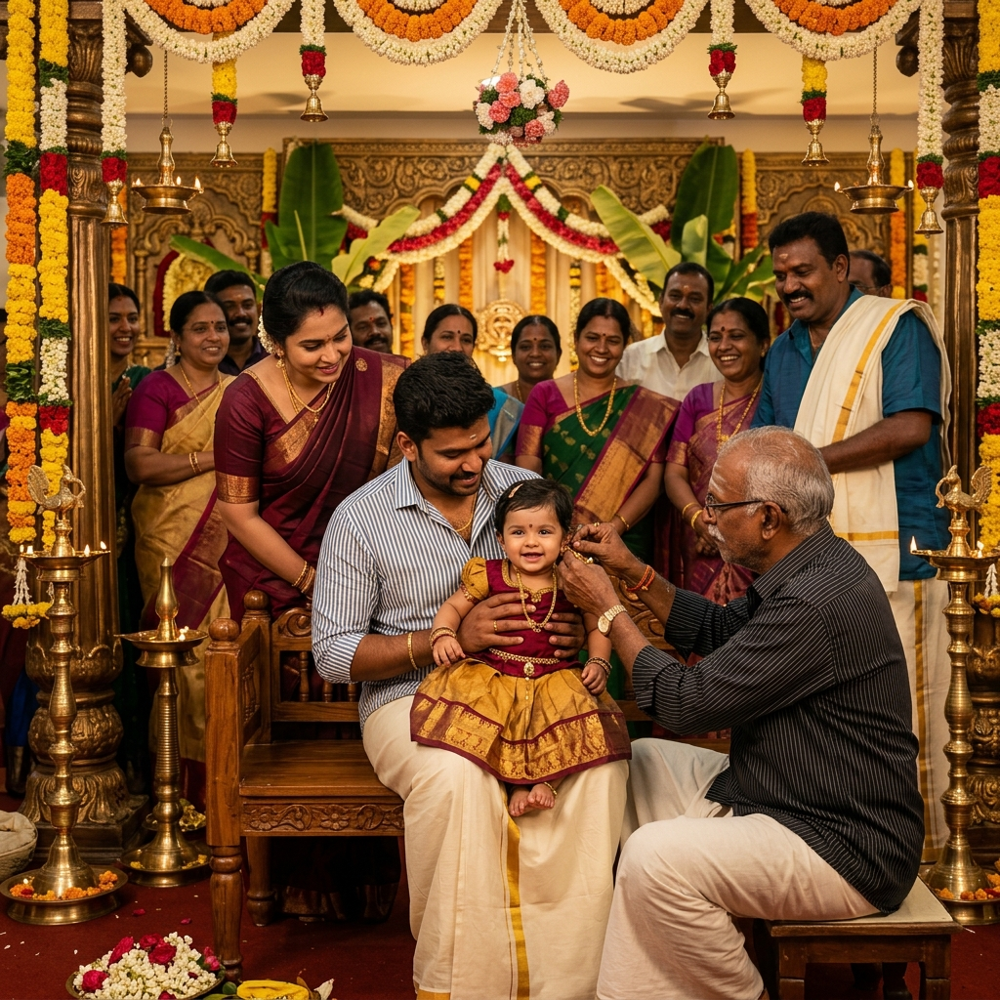
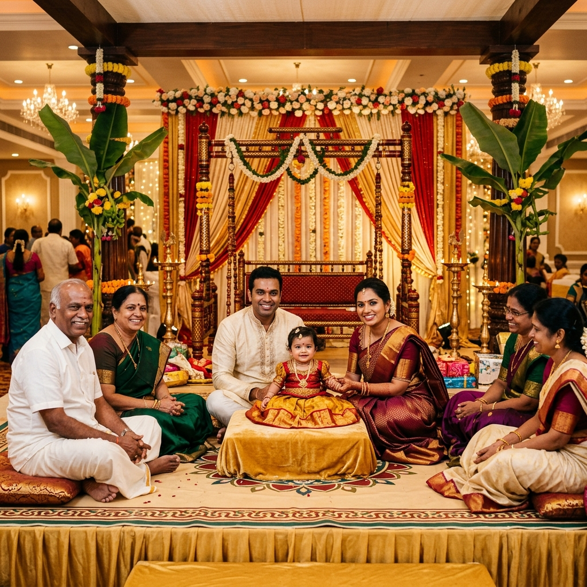
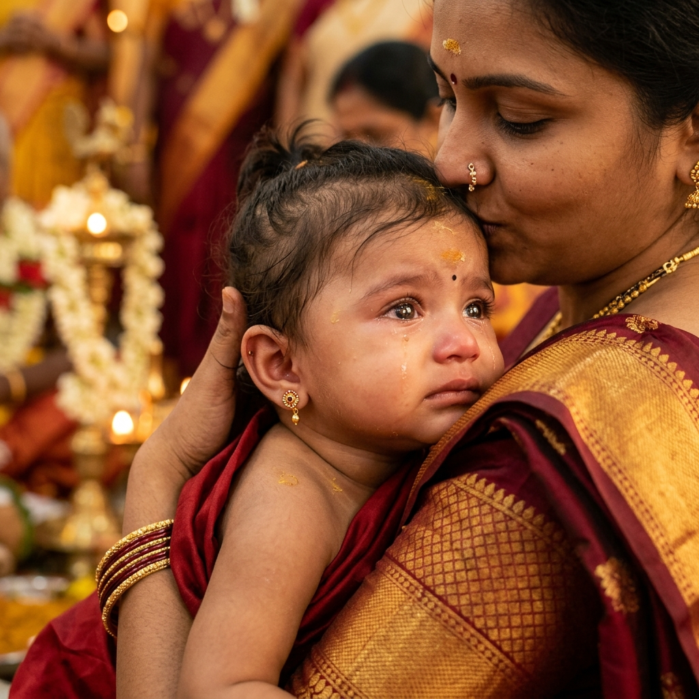

in the dining hall
The Occasion
Kaathukuthal, kept traditional and unhurried
Kaathukuthal is one of the oldest ceremonies still kept in most Tamil families, and it is almost always the first occasion a child is brought before the whole extended family. The maternal uncle holds the child, the elders bless it, the goldsmith or the family priest does the piercing, and then everybody eats together. It is short, it is emotional, and it brings a surprising number of people.
What the ceremony asks of a venue is simple but specific: an auspicious, calm space with room for the ritual at the centre and for three or four generations of relatives seated around it, close enough to actually see. The open hall does that without anyone craning around a pillar.
It also asks for a proper meal afterwards, cooked and served at scale. The kitchen has the vessels for it and the dining hall seats 250 at a time, so the sadhya goes out hot and nobody is left waiting outside in the sun.
For the Ceremony
What a traditional ceremony needs
Nothing elaborate — space, comfort for the elders, and a kitchen that can feed everyone who came.
-
Space for the ritual
The ceremony sits at the centre of an open hall, with relatives seated close enough on all sides to see it properly.
-
Traditional setting
A temple-style facade and a decorated stage area suited to kolam, kuthuvilakku and traditional decoration.
-
Comfortable for elders
Level floors, cushioned seating and full air conditioning, so grandparents can sit through the whole morning.
-
Kitchen and large vessels
A working kitchen with large-scale utensils available, ready for your cook or caterer to serve a traditional sadhya.
-
Dining hall for 250
The meal is served in its own hall, so the ceremony space stays undisturbed while food goes out.
-
Rooms for the family
Air-conditioned rooms with attached bathrooms for the child, the mother and the immediate family to prepare and rest.
Through the Morning
How a kaathukuthal runs here

The ritual and the blessings
Families usually book the morning, arriving early to set the lamp, the kolam and the flowers before the auspicious time. The ceremony itself is held at the centre or on the stage depending on how many relatives are coming, and seating is arranged around it rather than in strict rows, so aunts, uncles and cousins can gather in close. After the piercing, the elders come forward one family at a time to bless the child — a stretch that takes far longer than the ritual and needs everyone to be seated comfortably.
- Ritual space at the centre or on the stage
- Seating arranged around the ceremony, not in rigid rows
- Space for elders to come forward family by family
- Decoration and lamp setup from early morning

Blessings & The Family Gathering
Once the ear-piercing is done, the occasion turns into a beautiful family gathering. The stage provides a perfect, brightly lit backdrop for elders to come forward, bless the child with gifts or a shawl, and take memorable family photographs. Relatives who have travelled a distance can sit and relax in the air-conditioned hall throughout the afternoon before moving to the dining hall for the traditional feast.
- Wide, well-lit stage for family blessings and photographs
- Air-conditioned hall to sit in through the afternoon
- Traditional sadhya served for 250 per sitting in the dining hall
- Parking on the premises for relatives arriving early
Photographs
Traditional ceremonies at the mandapam
Real photographs taken at the venue. Tap any image to open it full size.

Your special day deserves a special place
From weddings and receptions to birthdays and traditional ceremonies, VMS Dhamotharan Thirumana Mandapam is ready to make your celebration memorable.